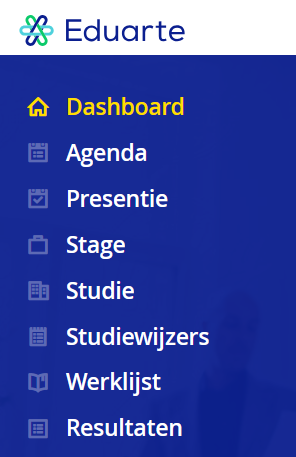

Eduarte is om informatie zoals absentie en cijfers etc. in the zien. Als ouder kunt u het ouderportaal van Eduarte inzien als uw zoon/dochter jonger dan 18 is of als ze toestemming hebben gegeven
In het menu ziet u de diverse knoppen/opties om de informatie in te zien. Deze knoppen spreken voor zich, de knop "agenda" laat bijvoorbeld het rooster zien.
Eduarte